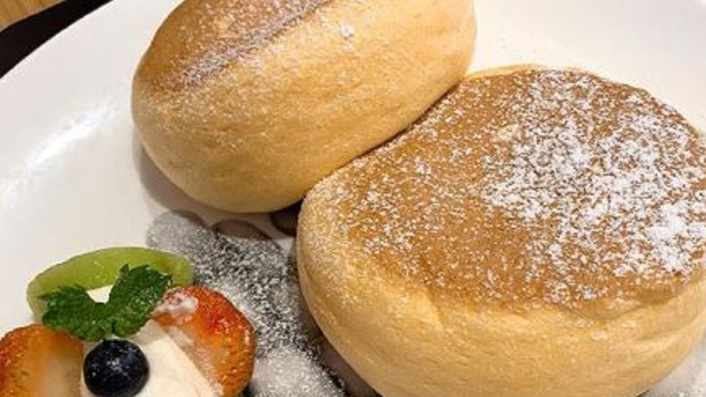

冬天最適合吃熱呼呼的甜點，有看起來像鯛魚燒的「鯛魚三明治」，還有東京代官山新排隊美食，
牛角麵包肉桂捲，而窯烤蛋包舒芙蕾，就像在烤箱裡變魔法，「膨鬆」舒芙蕾，外酥內軟，
冬天溫暖了饕客的胃。 店員從烤箱裡取出，撒上綠葉點綴，「窯烤蛋包舒芙蕾」裡頭還有驚喜，
滿滿培根，讓顧客一口接一口。 顧客：「嗯，好吃。」 舒芙蕾的基底，就是蛋白霜，加進卡士達奶油，
豪邁地倒在可麗餅皮後，只要包覆一半，接著灑上糖粉，再送進烤箱窯烤。接著只要看舒芙蕾在烤箱裡變魔法，
逐漸烤出膨鬆口感，外酥內軟的舒芙蕾，色香味俱全，搭配蘋果切片一起吃。 記者：「一下子就在嘴裡化開消失了，
熱熱的甜點，是會漸漸湧現，不斷擴散開來的甜味。」 千葉縣松戶市這家十月才開幕的購物中心，也有美味，
讓民眾讚不絕口。 顧客：「真的非常可愛，會覺得吃了很可惜，鯛魚燒。」 外觀看起來像鯛魚燒，但是不好意思，
不是鯛魚燒，而是「鯛魚三明治」，鬆軟口感來自於蛋黃、牛奶、小麥粉，以及蛋白霜，像紅豆餅一樣 ，倒入鐵板烤八分鐘，
餅皮完成。 之後添加千葉縣產的白梨子泥，用兩片餅皮包成三明治，「鯛魚三明治」，讓記者試吃過後，滿意的猛點頭。
記者：「熱熱的鬆軟的內餡，跟爽口梨子奶油，相當搭。」 三款「鯛魚三明治」，梨子內餡、小倉紅豆，還有奶油，
任君挑選。 東京代官山也有一款人氣美食，牛角麵包肉桂捲吸引老饕來嘗鮮。 顧客：「看到美味的圖像，就覺得好想吃，
為了吃這個才來的。」 層層堆疊的餅皮，鋪上胡桃後再捲起來，但是切開來後，放在小小的平底烤盤上，送進烤箱才是重點，
最後再淋上奶油起司。 記者：「好厲害，酥酥脆脆地，嗯，奶油香氣，還摻有酸味，味道非常濃郁。」 一款料理，獻上雙重口感，日本甜點變
魔法，冬天也能大飽口福。
